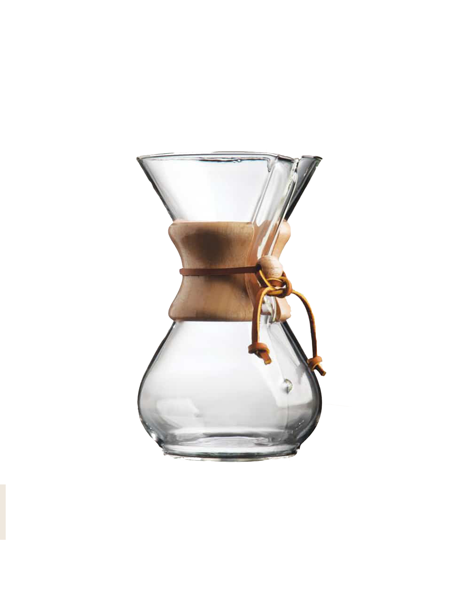
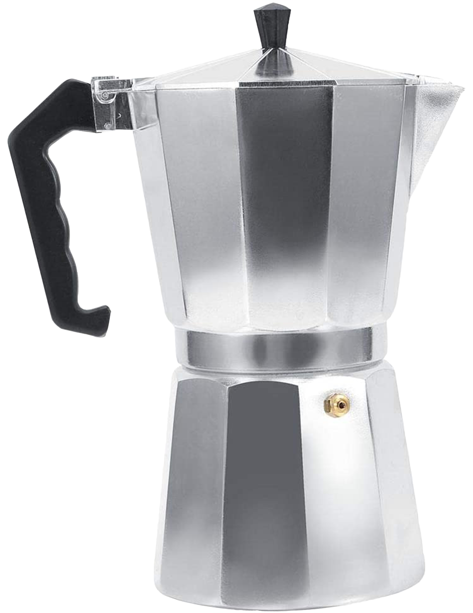
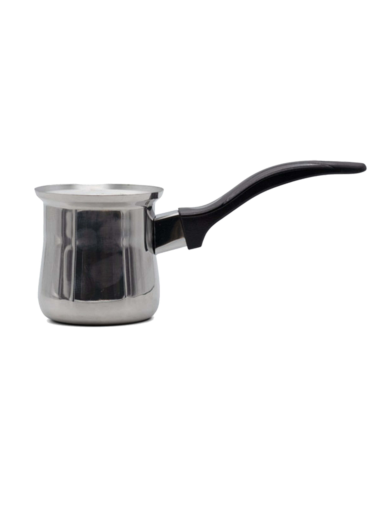
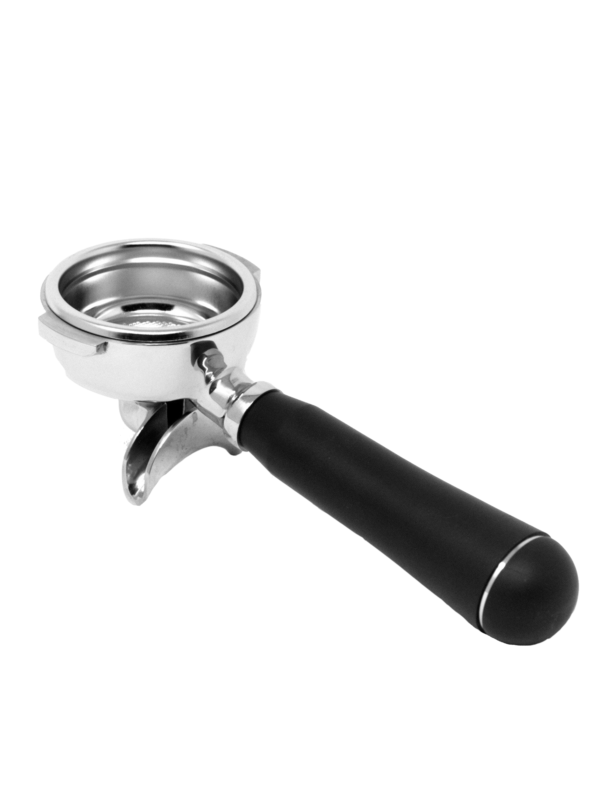

French Press
First designmed in 1929, this simple, filter free
brewing method produces a rich, full-bodied brew in
about four minutes. Use coarse grounds to prevent
bitterness - this also keeps the grounds from slipping
through the fine mesh of the plunger.

Chemex
With its simple, elegant shape and patented brew
process, the Chemex eliminates oils, sediment and
bitterness, resulting in a rick taste.

Moka Pot
This iconic stovetop pot was inventeed in Italy in the
1930s. It uses boiling wate to create pressurized
steam that pushes the coffee through a filter into the
top compaartment. The result is aa dark and sweet,
full-bodied brew.

Turkish
Traditionally cooked on scorching hot sand in the
Mediterranean, this coffee pot is now designed
for the stovetop but still produces a dark,
authentic brew full of strong flavour. A slow heating
method is the best, the coffee should foam rather
than boil. When the coffee is ready, enjoy it black.

Espresso
Espresso coffee is brewed by forcing neaar boiled water through
finely ground coffee beans aat high pressure. The result is a thick
coffee extract with more suspended coffee solids and a
foamy crema.
Capsules
Single Cup coffeee is brewed using either pre-measured coffee
pods or coffee capsules that are calibrated to produce a single
cup of coffee in a coffee maker designed to use the inserts.